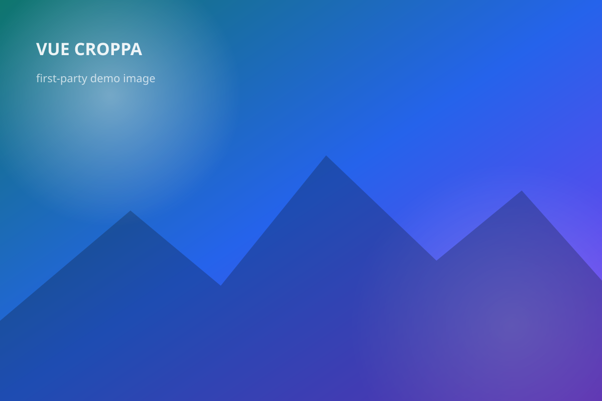

Orientation
Initial-image EXIF hint
For an initial slot image, v1 can read data-exif-orientation and normalize the displayed image.
Orientation: {{ orientation }}
<img slot="initial" data-exif-orientation="6">

Orientation
For an initial slot image, v1 can read data-exif-orientation and normalize the displayed image.
<img slot="initial" data-exif-orientation="6">